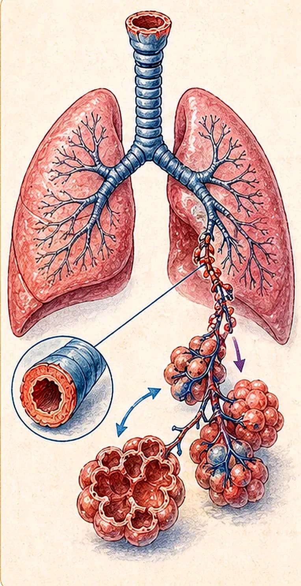
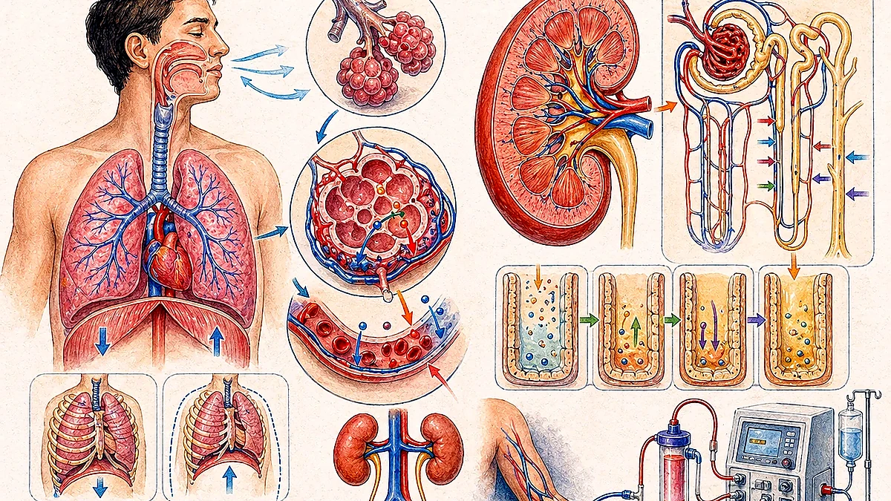
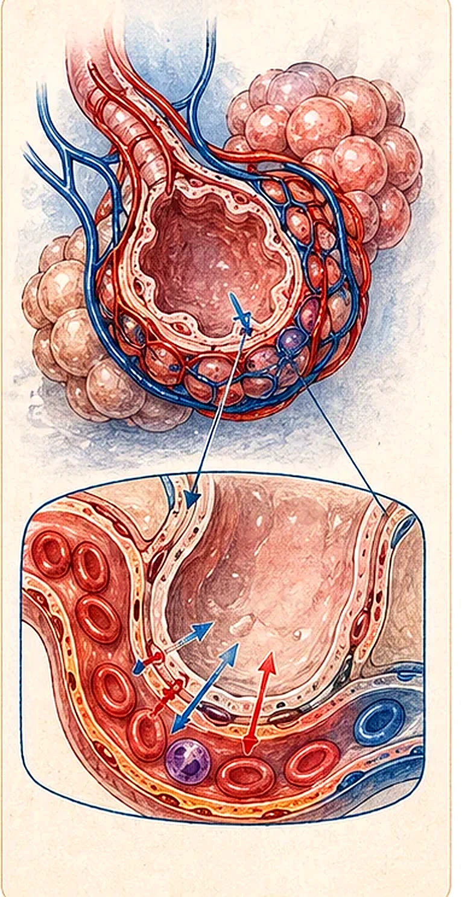
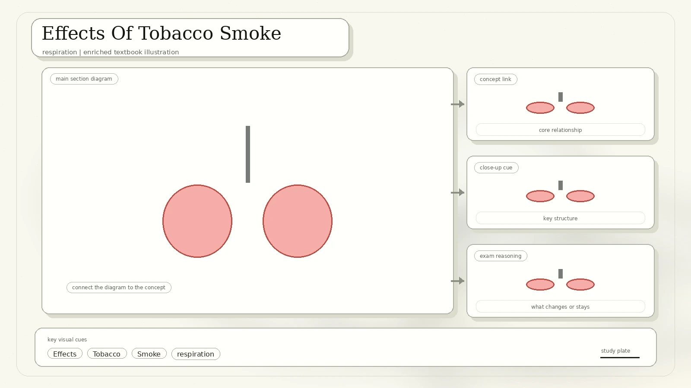
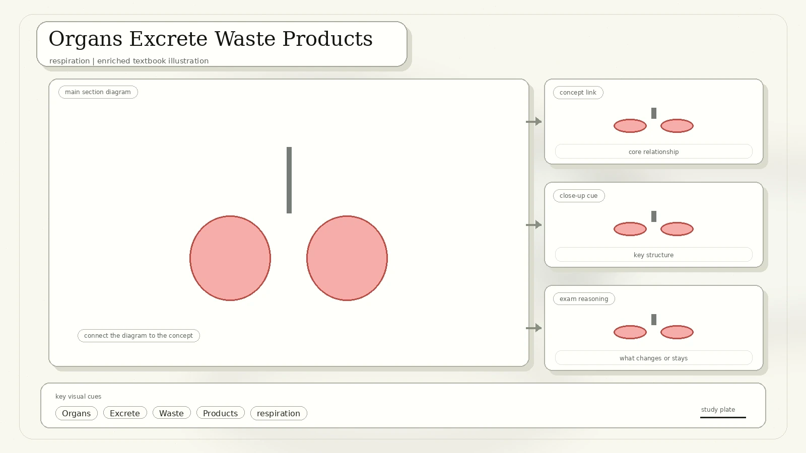
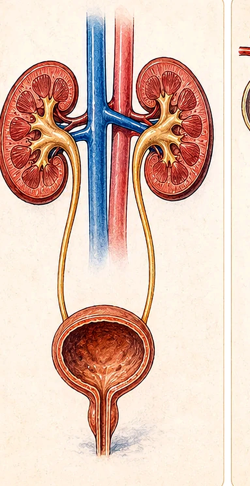
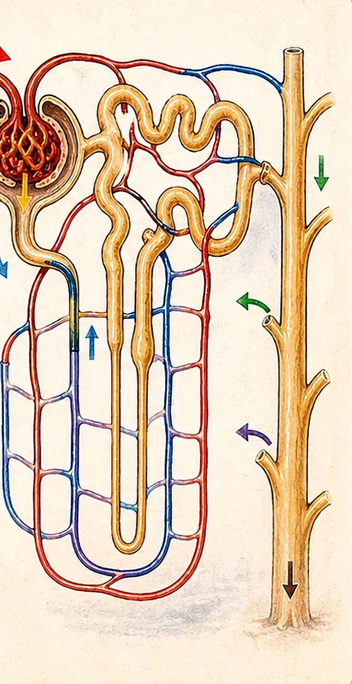
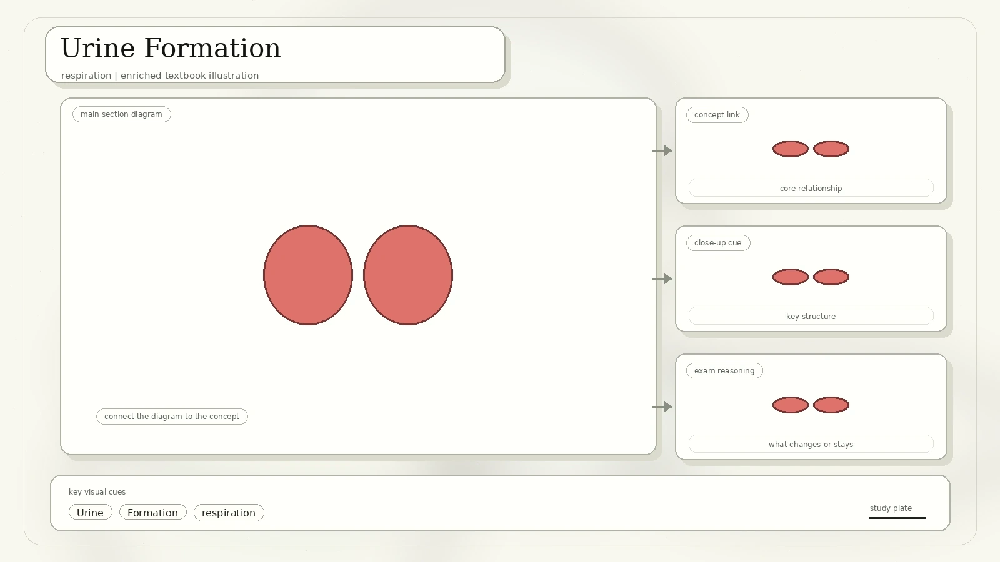
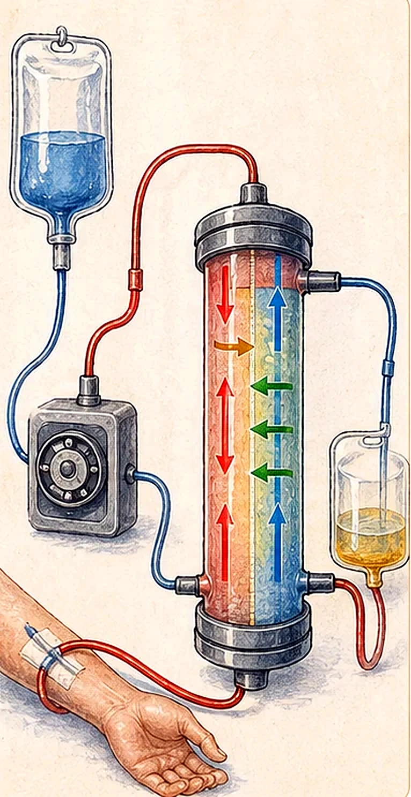

Human Respiratory System
The scan labels the pathway from nose to alveoli: nasal cavity and sinuses, nostrils, oral cavity, pharynx, larynx, trachea, carina, right and left main bronchi, bronchi, alveoli, lungs, pleura, ribs, and diaphragm.

Component functions
- Nasal passages lead from nostrils and are lined with moist mucous membrane.
- The pharynx is a common passage for the openings of the oesophagus and trachea.
- The larynx is the voice box containing vocal cords.
- The trachea is supported by C-shaped cartilage that prevents collapse as air pressure changes.
- The trachea branches into two bronchi, one to each lung.
- Bronchi branch repeatedly into bronchioles, ending in clusters of air sacs called alveoli.
- Mucus traps dust, pollen, and particles; cilia sweep mucus upward to the pharynx to be swallowed into the oesophagus.
Pleura: the lungs are located in the pleural cavity and enclosed by the pleura, a two-layered membrane. The inner layer touches the lungs; the outer layer adheres to the chest wall.
The Thoracic Cavity And Breathing
The lungs are protected by ribs that extend from the backbone to the sternum. Breathing uses the ribs, intercostal muscles, and diaphragm to change the volume of the thoracic cavity.

External and internal intercostal muscles are attached to the ribs. When one set contracts, the other relaxes.
A sheet of skeletal muscle forming the bottom wall of the thoracic cavity. When it contracts it moves downward; when it relaxes it moves upward.
| Breathing Step | Ribs And Diaphragm | Volume And Pressure | Air Movement |
|---|---|---|---|
| Inhalation | Rib cage moves up and out; diaphragm contracts downward. | Thoracic volume increases; pressure falls. | Air enters lungs. |
| Exhalation | Rib cage moves down and in; diaphragm relaxes upward. | Thoracic volume decreases; pressure rises. | Air leaves lungs. |
Alveoli And Oxygen Transfer
Alveoli are the sites of gas exchange in the lungs. The scan highlights large surface area, one-cell-thick walls, moist lining, blood capillaries, and concentration gradients.
- Alveoli are present in large quantities, giving a huge surface area for gas exchange.
- The walls are one cell thick, so diffusion distance is short.
- A thin film of water allows oxygen to dissolve before diffusing across membranes.
- Capillaries from the pulmonary artery supply oxygen-poor blood to the alveoli.
- Oxygen diffuses from alveolar air into blood down its concentration gradient.
- Oxygenated blood enters pulmonary veins and is carried back to the heart.

Effects Of Tobacco Smoke
The source lists nicotine, carbon monoxide, tar, and irritants as harmful components of tobacco smoke, then connects them to chronic bronchitis and emphysema.

Addictive stimulant that stimulates adrenaline release, increasing heart rate and blood pressure.
Poisonous gas that combines irreversibly with haemoglobin to form carboxyhaemoglobin, reducing oxygen transport.
Carcinogenic material that increases cancer risk.
Paralyse cilia lining air passages and increase risk of chronic bronchitis and emphysema.
Airway lining is irritated and inflamed. Mucus production increases, cilia become paralysed, airflow is blocked by swelling and mucus, and symptoms include wheezing, shortness of breath, and persistent cough.
Toxic chemicals such as tobacco smoke destroy alveolar walls. Air spaces permanently enlarge, gas exchange surface area decreases, lungs lose elasticity, and severe breathlessness occurs.
Organs Excrete Waste Products
Excretion removes metabolic waste, not undigested food. The scan lists lungs, kidneys, skin, and liver as excretory organs.

| Excretory Organ | Excretory Products | Excreted As |
|---|---|---|
| Lungs | Carbon dioxide | Exhaled air |
| Kidneys | Excess mineral salts, urea, uric acid, creatinine, excess water | Urine |
| Skin | Excess mineral salts, small quantities of urea, excess water | Sweat |
| Liver | Bile pigments | Secreted as bile; leaves the body in faeces |
Human Urinary System
The urinary tract includes two kidneys, two ureters, the bladder, a sphincter, and the urethra. Its job is to make, store, and remove urine.

- Kidneys are two bean-shaped organs in the abdominal cavity.
- Ureters are narrow tubes emerging from a depression in the concave kidney surface called the hilum.
- Ureters connect the kidneys to the urinary bladder.
- The bladder is elastic and muscular; it collects and stores urine excreted by kidneys.
- The sphincter muscle at the base of the bladder controls urine flow into the urethra and is controlled by nervous impulses from the brain.
- The urethra connects the bladder to the outside of the body.
Kidney And Nephron Structure
The kidney has an outer cortex and inner medulla. Across both are many excretory tubules called nephrons, plus collecting ducts and associated blood vessels. Nephrons are the urine-producing units.
Kidney parts
- The cortex is covered by a protective fibrous renal capsule.
- The medulla consists of 8 to 18 conical renal pyramids.
- The tips of the pyramids empty urine into the renal pelvis.
- The renal pelvis acts as a funnel, collecting urine from all pyramids and delivering it to the ureter.
Nephron parts
- The glomerulus is a ball of capillaries supplied by an afferent arteriole from the renal artery.
- High glomerular blood pressure drives ultrafiltration.
- Bowman's capsule surrounds the glomerulus in a cup-like structure.
- Bowman's capsule and glomerulus together form the renal corpuscle.
- The nephron includes the proximal convoluted tubule, loop of Henle, distal convoluted tubule, and collecting duct.

Urine Formation
The scan describes filtration, reabsorption, secretion, and excretion. The key idea is that useful substances are recovered while metabolic wastes remain in the tubule fluid.

Blood pressure forces water, urea, salts, glucose, amino acids, vitamins, and other small solutes into Bowman's capsule. Blood cells and large molecules remain in capillaries.
In the proximal convoluted tubule, most mineral salts and all glucose and amino acids are reabsorbed by active transport or diffusion. Water is reabsorbed by osmosis.
Reabsorption of water continues in the loop of Henle. Water and salts are reabsorbed in the distal convoluted tubule.
Urine drains into collecting ducts, renal pelvis, ureter, bladder, and urethra.
The glomerular capillary endothelium and Bowman's capsule basement membrane are partially permeable, so only small soluble substances pass through.
Kidney Health, Dialysis, And Transplant
The scan finishes with kidney health, dialysis, and transplant. These pages connect kidney biology to real medical treatment for kidney failure.
Infection, toxin exposure, and injury.
Diabetes, high blood pressure, heart disease, obesity, inherited kidney disorders, and aging.
Dialysis
- A dialysis machine performs some kidney functions by passing blood over a dialysis membrane.
- The membrane is permeable to small molecules but does not allow proteins to pass.
- Dialysis fluid has the same concentration of essential substances as blood plasma, except metabolic wastes.
- Waste such as urea diffuses out of blood into dialysis fluid.
- Fresh dialysis fluid is continuously supplied to maintain a low urea concentration.
- Blood and dialysis fluid flow in opposite directions to maintain concentration gradients; this is countercurrent flow.

Kidney transplant: a diseased or failing kidney can be surgically replaced with a healthy kidney from a living or deceased donor. It is a treatment option for kidney failure.